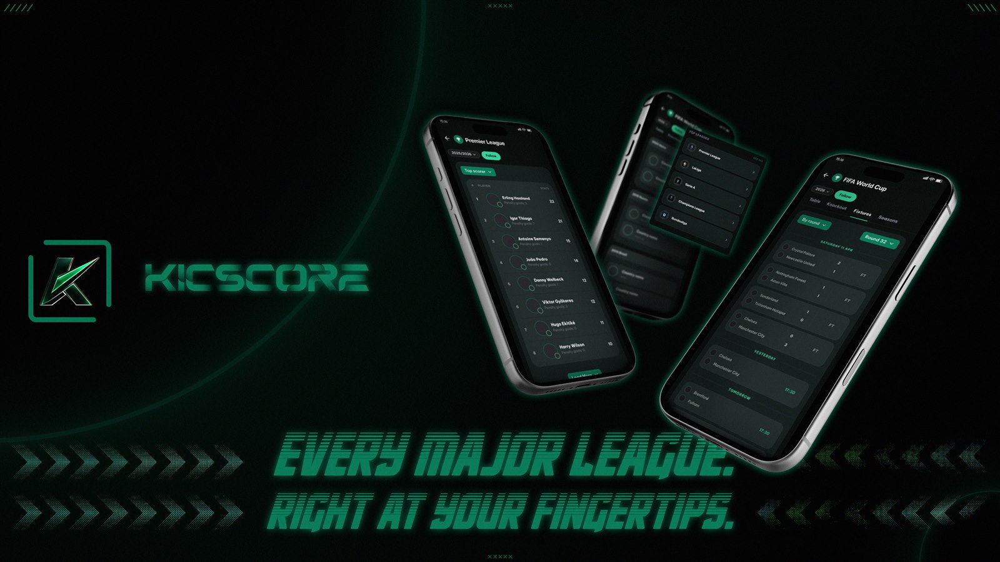
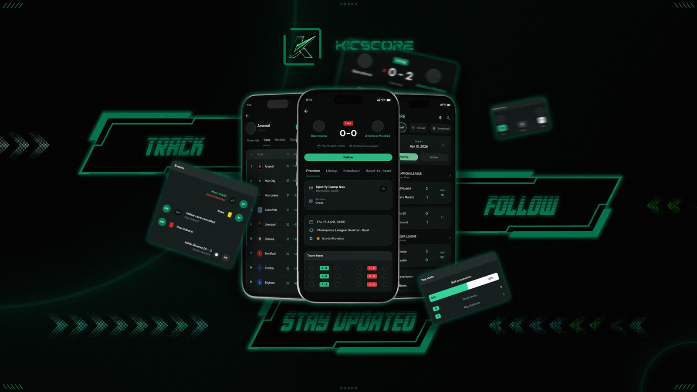
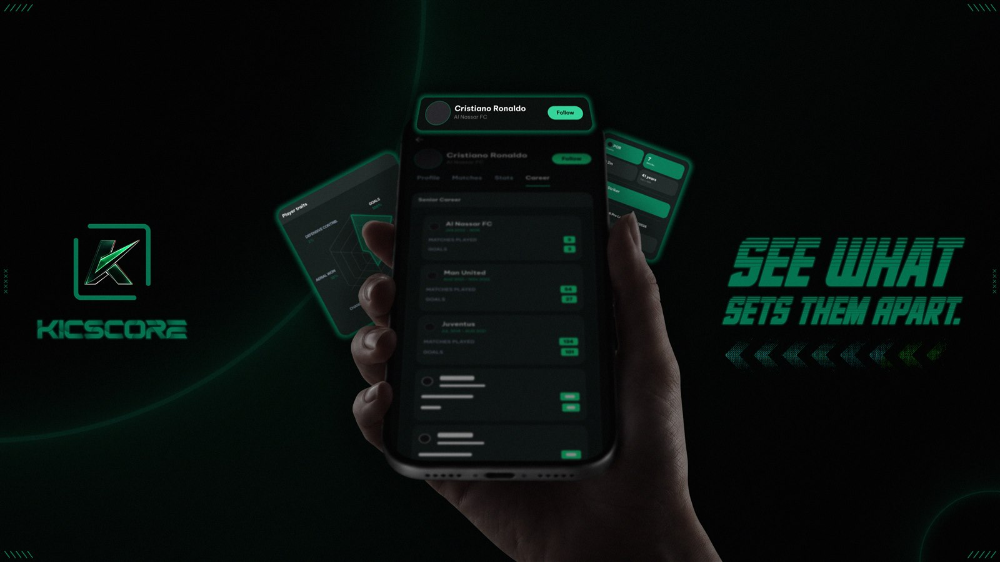

Sports · Mobile application
KickScore
Live football, thoughtfully connected.

- Project
- Professional / Client · Published
- My contribution
- Flutter UI & API strategy
- Focus
- Google Play release
- Core stack
- Flutter · GetX · API-Football
01 / Overview
The product and my part in it.
KickScore is a published live football score application on Google Play. I contributed to the project through sports data provider research, API feature mapping, backend coordination, and Flutter UI implementation.
My role
I researched sports data providers, selected API-Football based on cost and feature coverage, documented endpoint mapping, identified composite API requirements, coordinated with backend developers, and implemented the Flutter frontend UI.
02 / The challenge
What needed to change.
The client wanted a FotMob-style football score experience, but enterprise sports data providers like Opta and StatsPerform were too costly for the MVP budget. The project needed a more affordable data source while still supporting live scores, fixtures, standings, teams, players, and match details.
03 / My contribution
From decisions to implementation.
- Researched and selected API-Football as a lower-cost alternative to enterprise providers like Opta and StatsPerform.
- Documented endpoint mapping for live scores, fixtures, standings, teams, players, match details, and related football data flows.
- Identified composite features requiring multiple API responses and helped plan backend-side aggregation strategy.
- Coordinated with backend developers on API usage, response structure, feature feasibility, and data limitations.
- Implemented the Flutter UI for the football score experience using production-style app structure.
- Contributed to production-readiness for the Google Play release.
04 / The outcome
Google Play release
Contributed to the published Google Play app through Flutter UI implementation, API strategy, backend coordination, and release support.
Tools & technologies
Professional client project — public source is not shared, but the app is available on Google Play.
A closer look
Inside the app.
Select an image to view it in full size.


